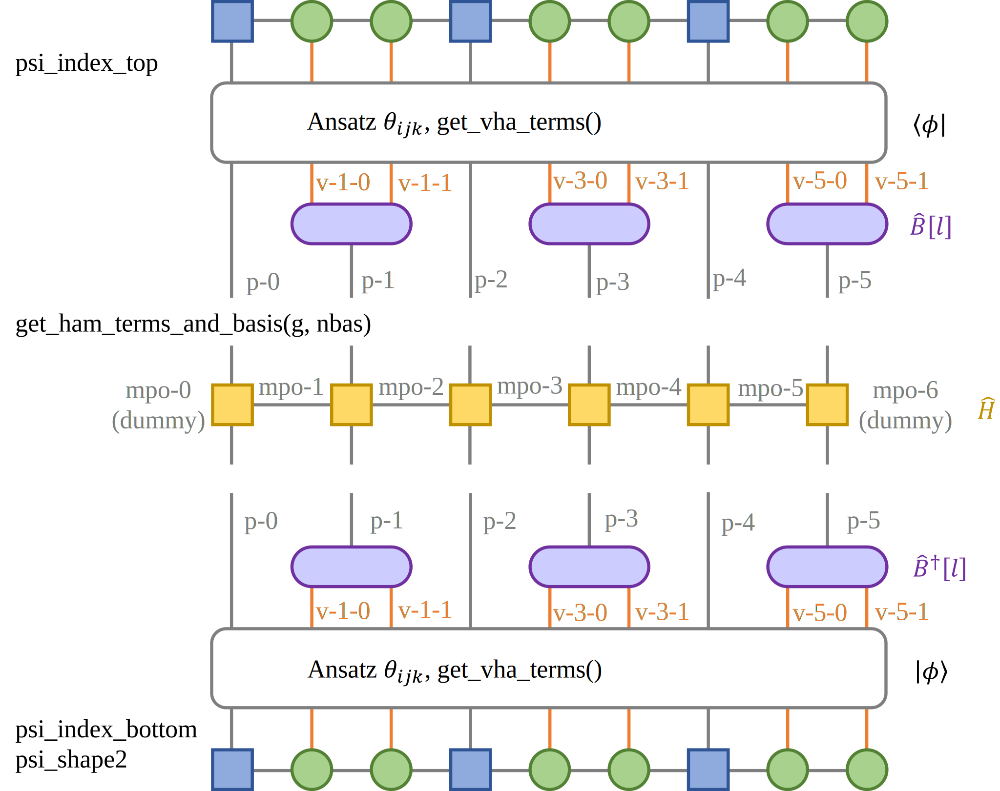
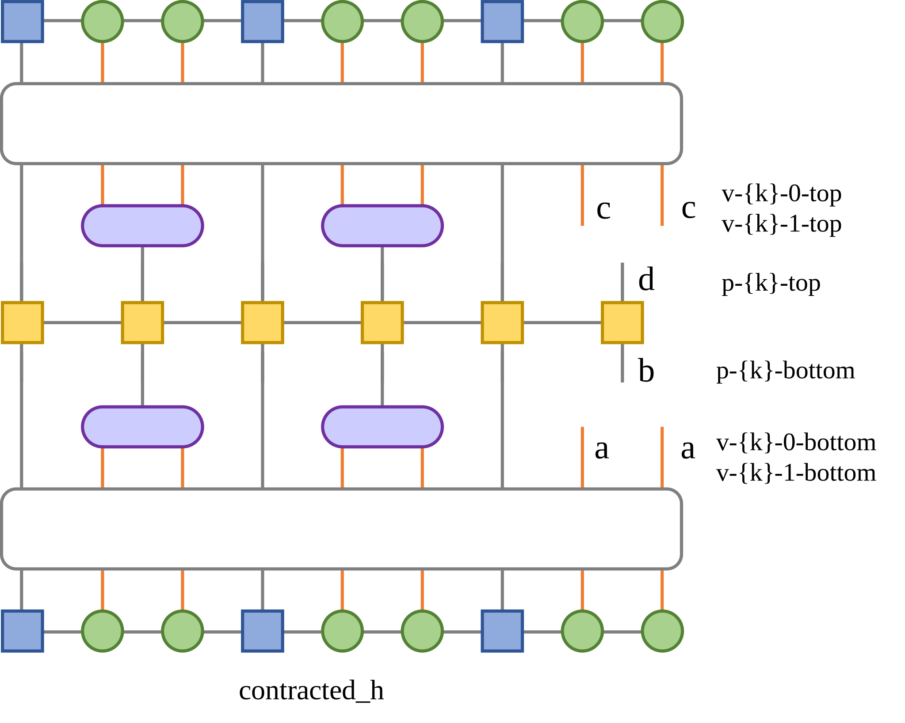

Variational Basis State Encoder (Ground State)#
1 Backgroud#
This tutorial is for variational basis state encoder (VBE) for the ground state of the Holstein model.
To calculate the ground state of Holstein model accurately, many levels of phonons are needed, which will cost too many qubits in quantum circuit. There exists another idea that we can view linear conbination of phonons as an effective phonon mode, which is possible to save the qubits in phonon encoding:
Here, we transform the original phonon basis \(\ket{m}\) to the encoded basis \(\ket{n}\), via transformation operator \(\hat{B}[l]\). The form of \(\hat{B}[l]\) is the central of VBE and the algorithm are presented in section 2. For more details, see https://doi.org/10.1103/PhysRevResearch.5.023046
2 Algorithm Realization#
2.1 Imports#
[1]:
import numpy as np
import scipy
from opt_einsum import contract
import tensorcircuit as tc
from tencirchem import set_backend, Op, BasisSHO, BasisSimpleElectron, Mpo, Model
from tencirchem.dynamic import get_ansatz, qubit_encode_op, qubit_encode_basis
from tencirchem.utils import scipy_opt_wrap
from tencirchem.applications.vbe_lib import get_psi_indices, get_contracted_mpo, get_contract_args
2.2 Initial setups#
In this section, we set intital parameters for coming sections. Here, JAX is used as backend. nsite, omega, v correspond to the site number, phonon frequency \(\omega\), transfer intergral \(V\) in Holstein model, respectively:
Each site possesses one phonon mode, which is represented by 2 qubit per phonon (see n_qubit_per_mode). Considering gray encoding is adopted, the number of phonon basis (nbas_v) is \(2^2\). psi_index_top and psi_index_bottom correspond to the physical index of ket and bra, b_dof_vidx correspond to the qubits that need VBE, psi_shape2 is the physical bond dimension of each qubit state. The stucture of wavefunction and operator are presented in Fig.1. Note that the
related arguments and functions are also marked.  Fig. 1 The structure of wavefunction and operator. Blue squares correspond to qubit representing spin, green circles correspond to qubits representing vibrations, purple circles correspond to \(B[l]\), and orange squares correspond to Matrix Product Operators (MPO).
[2]:
backend = set_backend("jax")
nsite = 3
omega = 1
v = 1
# two qubit for each mode
# modify param_ids before modifying this
n_qubit_per_mode = 2
nbas_v = 1 << n_qubit_per_mode
# -1 for electron dof, natural numbers for phonon dof
dof_nature = np.array([-1, 0, 0, -1, 1, 1, -1, 2, 2])
# physical index for phonon mode
b_dof_pidx = np.array([1, 3, 5])
psi_idx_top, psi_idx_bottom, b_dof_vidx = get_psi_indices(dof_nature, b_dof_pidx, n_qubit_per_mode)
n_dof = len(dof_nature)
psi_shape2 = [2] * n_dof
print(
"psi_index_top: ",
psi_idx_bottom,
"\n psi_index_bottom: ",
psi_idx_bottom,
"\n b_dof_vidx: ",
b_dof_vidx,
"\n psi_shape2: ",
psi_shape2,
)
c = tc.Circuit(nsite * 3) # generate quantum circuit
c.X(0) # prepare one-electron initial state
n_layers = 3 # layers of ansatz
2023-08-08 15:44:36.794994: E external/org_tensorflow/tensorflow/compiler/xla/stream_executor/cuda/cuda_driver.cc:267] failed call to cuInit: CUDA_ERROR_NO_DEVICE: no CUDA-capable device is detected
WARNING:jax._src.lib.xla_bridge:No GPU/TPU found, falling back to CPU. (Set TF_CPP_MIN_LOG_LEVEL=0 and rerun for more info.)
psi_index_top: ['p-0-bottom', 'v-1-0-bottom', 'v-1-1-bottom', 'p-2-bottom', 'v-3-0-bottom', 'v-3-1-bottom', 'p-4-bottom', 'v-5-0-bottom', 'v-5-1-bottom']
psi_index_bottom: ['p-0-bottom', 'v-1-0-bottom', 'v-1-1-bottom', 'p-2-bottom', 'v-3-0-bottom', 'v-3-1-bottom', 'p-4-bottom', 'v-5-0-bottom', 'v-5-1-bottom']
b_dof_vidx: [array([1, 2]), array([4, 5]), array([7, 8])]
psi_shape2: [2, 2, 2, 2, 2, 2, 2, 2, 2]
2.3 Get Variational Hamiltonian Ansatz (VHA) Terms#
In this section, we will generate variational hamiltonian ansatz terms. The following ansatz is adopted:
The anasatz is transformed from electron-phonon basis to qubit basis through qubit_encode_op() and qubit_encode_basis()
[3]:
def get_vha_terms():
# variational Hamiltonian ansatz (vha) terms
g = 1 # dummy value, doesn't matter
ansatz_terms = []
for i in range(nsite):
j = (i + 1) % nsite
ansatz_terms.append(Op(r"a^\dagger a", [i, j], v))
ansatz_terms.append(Op(r"a^\dagger a", [j, i], -v))
ansatz_terms.append(Op(r"a^\dagger a b^\dagger-b", [i, i, (i, 0)], g * omega))
basis = []
for i in range(nsite):
basis.append(BasisSimpleElectron(i))
basis.append(BasisSHO((i, 0), omega, nbas_v))
ansatz_terms, _ = qubit_encode_op(ansatz_terms, basis, boson_encoding="gray")
spin_basis = qubit_encode_basis(basis, boson_encoding="gray")
# this is currently hard-coded for `n_qubit_per_mode==2`
# if the values of param_ids are opposite to each other, the values of the parameters are forced to be opposite in the optimization.
param_ids = [1, -1, 0, 2, 3, 4, 5, 6, 7, 8] + [9, -9] + list(range(10, 18)) + [18, -18] + list(range(19, 27))
return ansatz_terms, spin_basis, param_ids
ansatz_terms, spin_basis, param_ids = get_vha_terms()
ansatz = get_ansatz(ansatz_terms, spin_basis, n_layers, c, param_ids)
print(
"ansatz_terms: \n",
ansatz_terms,
"\nspin_basis: \n",
spin_basis,
"\nparam_ids: \n",
param_ids,
"\nansatz: \n",
ansatz,
)
ansatz_terms:
[Op('X Y', [0, 1], 0.5j), Op('Y X', [0, 1], -0.5j), Op('Y', [((0, 0), 'TCCQUBIT-1')], 0.1830127018922193j), Op('Z Y', [((0, 0), 'TCCQUBIT-0'), ((0, 0), 'TCCQUBIT-1')], -0.6830127018922193j), Op('Y', [((0, 0), 'TCCQUBIT-0')], -0.3535533905932738j), Op('Y Z', [((0, 0), 'TCCQUBIT-0'), ((0, 0), 'TCCQUBIT-1')], 0.3535533905932738j), Op('Z Y', [0, ((0, 0), 'TCCQUBIT-1')], -0.1830127018922193j), Op('Z Z Y', [0, ((0, 0), 'TCCQUBIT-0'), ((0, 0), 'TCCQUBIT-1')], 0.6830127018922193j), Op('Z Y', [0, ((0, 0), 'TCCQUBIT-0')], 0.3535533905932738j), Op('Z Y Z', [0, ((0, 0), 'TCCQUBIT-0'), ((0, 0), 'TCCQUBIT-1')], -0.3535533905932738j), Op('X Y', [1, 2], 0.5j), Op('Y X', [1, 2], -0.5j), Op('Y', [((1, 0), 'TCCQUBIT-1')], 0.1830127018922193j), Op('Z Y', [((1, 0), 'TCCQUBIT-0'), ((1, 0), 'TCCQUBIT-1')], -0.6830127018922193j), Op('Y', [((1, 0), 'TCCQUBIT-0')], -0.3535533905932738j), Op('Y Z', [((1, 0), 'TCCQUBIT-0'), ((1, 0), 'TCCQUBIT-1')], 0.3535533905932738j), Op('Z Y', [1, ((1, 0), 'TCCQUBIT-1')], -0.1830127018922193j), Op('Z Z Y', [1, ((1, 0), 'TCCQUBIT-0'), ((1, 0), 'TCCQUBIT-1')], 0.6830127018922193j), Op('Z Y', [1, ((1, 0), 'TCCQUBIT-0')], 0.3535533905932738j), Op('Z Y Z', [1, ((1, 0), 'TCCQUBIT-0'), ((1, 0), 'TCCQUBIT-1')], -0.3535533905932738j), Op('X Y', [0, 2], -0.5j), Op('Y X', [0, 2], 0.5j), Op('Y', [((2, 0), 'TCCQUBIT-1')], 0.1830127018922193j), Op('Z Y', [((2, 0), 'TCCQUBIT-0'), ((2, 0), 'TCCQUBIT-1')], -0.6830127018922193j), Op('Y', [((2, 0), 'TCCQUBIT-0')], -0.3535533905932738j), Op('Y Z', [((2, 0), 'TCCQUBIT-0'), ((2, 0), 'TCCQUBIT-1')], 0.3535533905932738j), Op('Z Y', [2, ((2, 0), 'TCCQUBIT-1')], -0.1830127018922193j), Op('Z Z Y', [2, ((2, 0), 'TCCQUBIT-0'), ((2, 0), 'TCCQUBIT-1')], 0.6830127018922193j), Op('Z Y', [2, ((2, 0), 'TCCQUBIT-0')], 0.3535533905932738j), Op('Z Y Z', [2, ((2, 0), 'TCCQUBIT-0'), ((2, 0), 'TCCQUBIT-1')], -0.3535533905932738j)]
spin_basis:
[BasisHalfSpin(dof: 0, nbas: 2), BasisHalfSpin(dof: ((0, 0), 'TCCQUBIT-0'), nbas: 2), BasisHalfSpin(dof: ((0, 0), 'TCCQUBIT-1'), nbas: 2), BasisHalfSpin(dof: 1, nbas: 2), BasisHalfSpin(dof: ((1, 0), 'TCCQUBIT-0'), nbas: 2), BasisHalfSpin(dof: ((1, 0), 'TCCQUBIT-1'), nbas: 2), BasisHalfSpin(dof: 2, nbas: 2), BasisHalfSpin(dof: ((2, 0), 'TCCQUBIT-0'), nbas: 2), BasisHalfSpin(dof: ((2, 0), 'TCCQUBIT-1'), nbas: 2)]
param_ids:
[1, -1, 0, 2, 3, 4, 5, 6, 7, 8, 9, -9, 10, 11, 12, 13, 14, 15, 16, 17, 18, -18, 19, 20, 21, 22, 23, 24, 25, 26]
ansatz:
<function get_ansatz.<locals>.ansatz at 0x7f2fd4ed29e0>
2.4 Cost Functions for VQE Part#
The VQE parameters \(\theta_k\) are optimized via following equation:
where
[4]:
def cost_fn(params, h):
state = ansatz(params)
return (state.conj() @ (h @ state)).squeeze().real
vg = backend.jit(backend.value_and_grad(cost_fn))
opt_fn = scipy_opt_wrap(vg)
2.5 Get Hamiltonian Terms and Basis#
In this section, we generate the operator of the Holstein Hamiltonian presented in Section 2.2. The format of the operator are shown in Fig. 1. Note that the number of phonon levels are controlled by nbas.
[5]:
def get_ham_terms_and_basis(g, nbas):
terms = []
for i in range(nsite):
terms.append(Op(r"b^\dagger b", (i, 0), omega))
terms.append(Op(r"a^\dagger a b^\dagger+b", [i, i, (i, 0)], g * omega))
j = (i + 1) % nsite
terms.append(Op(r"a^\dagger a", [i, j], -v))
terms.append(Op(r"a^\dagger a", [j, i], -v))
basis = []
for i in range(nsite):
basis.append(BasisSimpleElectron(i))
basis.append(BasisSHO((i, 0), omega, nbas))
return terms, basis
2.6 Update \(B[l]\) in Iteration#
In this section, the function that calculates \(B[l]\) are defined:
where
and
The graphic representarion of h_contracted is presented in Fig. 2. Obiviously, if \(\hat{H}\) are provided, we can obtain \(\hat{B}[l]\) by solving the equation mentioned above. Considering this is a non-linear equation, several initial guesses are needed to avoid local minimum, which is controlled by nroot.  Fig. 2 Graphic representation of h_contracted
[6]:
def solve_b_array(psi, h_mpo, b_array, i):
nbas = b_array.shape[-1]
# get the input of tensor contraction function `contract`
args = get_contract_args(psi, h_mpo, b_array, i, n_qubit_per_mode, psi_idx_top, psi_idx_bottom, b_dof_pidx)
k = b_dof_pidx[i]
# output indices
args.append(
[
f"v-{k}-0-bottom",
f"v-{k}-1-bottom",
f"p-{k}-bottom",
f"v-{k}-0-top",
f"v-{k}-1-top",
f"p-{k}-top",
"mpo-0",
f"mpo-{len(h_mpo)}",
]
)
# get contracted_h and reshape the dofs named v-{k}-0-bottom(top) and v-{k}-1-bottom(top) to one dof with dimension 4
contracted_h = contract(*args).reshape(4, nbas, 4, nbas)
nroot = 3
def f(x):
x = x.reshape(nroot, 4, nbas)
# calculate P[l]
p = contract("abc, abd -> acd", x.conj(), x)
return contract("abcd, kab, kde -> kce", contracted_h, x, (np.array([np.eye(nbas)] * nroot) - p)).ravel()
# solve the equation mentioned above to obtain B[l]
sols = scipy.optimize.root(f, [b_array[i].flatten()] * nroot, method="df-sane").x.reshape(3, 4, nbas)
sols = list(sols) + [b_array[i].copy()]
b_array = b_array.copy()
es = []
for k, new_b in enumerate(sols):
# ensure the orthomormal constraint of B[l]
if not np.allclose(new_b @ new_b.T, np.eye(4)):
# print(f"Enforcing orthogonality for the {k}th root of b_array[{i}]")
new_b = np.linalg.qr(new_b.T)[0].T
b_array[i] = new_b
e = psi @ get_contracted_mpo(h_mpo, b_array, n_qubit_per_mode, b_dof_pidx, psi_idx_top + psi_idx_bottom) @ psi
es.append(e)
# print(np.array(es))
lowest_id = np.argmin(es)
return sols[lowest_id]
2.7 Main Structure of the Function#
This section is the main part of the funtion. The codes contain following parts: (i) Initialize the parameters and functions, some initializations are also preformed in section 2.2 (ii) Search for ground state, where \(\theta_k\) are updated via VQE and \(B[l]\) are calculated via functions in Section 2.6.
[7]:
vqe_e = []
thetas = np.zeros((max(param_ids) + 1) * n_layers)
for g in [1.5, 3]:
for nbas in [4, 8, 12, 16, 20, 24, 28, 32]:
print(f"g: {g}, nbas: {nbas}")
# take gray encoding as an initial guess for `b_array`
b_list = []
for i in range(max(dof_nature) + 1):
b = np.eye(nbas)[:nbas_v] # nbas_dummy * nbas
b_list.append(b)
b_array = np.array(b_list)
# initialize, get hamitonians and basis, see section 2.5
terms, basis = get_ham_terms_and_basis(g, nbas)
model = Model(basis, terms)
h_mpo = Mpo(model)
# searching for the ground state.
for i_iter in range(10):
h_contracted = get_contracted_mpo(
h_mpo, b_array, n_qubit_per_mode, b_dof_pidx, psi_idx_top + psi_idx_bottom
)
# get \theta_k via VQE
opt_res = scipy.optimize.minimize(opt_fn, args=(h_contracted,), x0=thetas / 2, jac=True, method="L-BFGS-B")
print(f"Iter {i_iter} VQE energy: {opt_res.fun}")
thetas = opt_res.x
psi = ansatz(thetas).real
# Update b[l] via functions in section 2.6
for i in range(len(b_array)):
b_array[i] = solve_b_array(psi, h_mpo, b_array, i)
vqe_e.append(opt_res.fun)
print(vqe_e)
g: 1.5, nbas: 4
Iter 0 VQE energy: -3.1462862688238387
Iter 1 VQE energy: -3.1467101393155392
Iter 2 VQE energy: -3.1516072207104755
Iter 3 VQE energy: -3.146809472707097
Iter 4 VQE energy: -3.1436199703762058
Iter 5 VQE energy: -3.1436211792549265
Iter 6 VQE energy: -3.1436161320531255
Iter 7 VQE energy: -3.1436163145946456
Iter 8 VQE energy: -3.143610688816215
Iter 9 VQE energy: -3.143615904093609
g: 1.5, nbas: 8
Iter 0 VQE energy: -3.143618182488605
Iter 1 VQE energy: -3.200840457440427
Iter 2 VQE energy: -3.2122982581916806
Iter 3 VQE energy: -3.2148415941913107
Iter 4 VQE energy: -3.214454540682066
Iter 5 VQE energy: -3.214612010154128
Iter 6 VQE energy: -3.2147110746262615
Iter 7 VQE energy: -3.2147665497225395
Iter 8 VQE energy: -3.2148131940534586
Iter 9 VQE energy: -3.2154252365889784
g: 1.5, nbas: 12
Iter 0 VQE energy: -3.1514261568965116
Iter 1 VQE energy: -3.207712921399021
Iter 2 VQE energy: -3.2143507766993564
Iter 3 VQE energy: -3.2151165867343625
Iter 4 VQE energy: -3.215551620056812
Iter 5 VQE energy: -3.21568849222177
Iter 6 VQE energy: -3.215871719331443
Iter 7 VQE energy: -3.215941510624362
Iter 8 VQE energy: -3.2160628060732046
Iter 9 VQE energy: -3.216149074896171
g: 1.5, nbas: 16
Iter 0 VQE energy: -3.1514406055444124
Iter 1 VQE energy: -3.2076420281600306
Iter 2 VQE energy: -3.2142584040499904
Iter 3 VQE energy: -3.215027472815238
Iter 4 VQE energy: -3.215298468441994
Iter 5 VQE energy: -3.215473370191188
Iter 6 VQE energy: -3.215603547226202
Iter 7 VQE energy: -3.2157277687243084
Iter 8 VQE energy: -3.21585866940053
Iter 9 VQE energy: -3.215945718302776
g: 1.5, nbas: 20
Iter 0 VQE energy: -3.1514390786099793
Iter 1 VQE energy: -3.207490813088342
Iter 2 VQE energy: -3.214102161196929
Iter 3 VQE energy: -3.2148182787029125
Iter 4 VQE energy: -3.215041112156586
Iter 5 VQE energy: -3.2151813495719064
Iter 6 VQE energy: -3.2153433350190888
Iter 7 VQE energy: -3.215488882659097
Iter 8 VQE energy: -3.2156246556276216
Iter 9 VQE energy: -3.2157174737499026
g: 1.5, nbas: 24
Iter 0 VQE energy: -3.1514387774077157
Iter 1 VQE energy: -3.207367390115564
Iter 2 VQE energy: -3.2139409419868894
Iter 3 VQE energy: -3.214681092894311
Iter 4 VQE energy: -3.2148647347163752
Iter 5 VQE energy: -3.2149976397508198
Iter 6 VQE energy: -3.2150898148896068
Iter 7 VQE energy: -3.215209498240965
Iter 8 VQE energy: -3.215350330348768
Iter 9 VQE energy: -3.215489480343017
g: 1.5, nbas: 28
Iter 0 VQE energy: -3.151439525393469
Iter 1 VQE energy: -3.2073726435058725
Iter 2 VQE energy: -3.21394347501351
Iter 3 VQE energy: -3.2146357208139835
Iter 4 VQE energy: -3.2147953021340396
Iter 5 VQE energy: -3.2149183613661005
Iter 6 VQE energy: -3.2150120210391324
Iter 7 VQE energy: -3.2151326321686358
Iter 8 VQE energy: -3.2152609684807225
Iter 9 VQE energy: -3.2153772130446274
g: 1.5, nbas: 32
Iter 0 VQE energy: -3.1514407536942515
Iter 1 VQE energy: -3.2073747584311443
Iter 2 VQE energy: -3.213913960989289
Iter 3 VQE energy: -3.214575999427622
Iter 4 VQE energy: -3.2147908760265476
Iter 5 VQE energy: -3.214908337484859
Iter 6 VQE energy: -3.214995903540079
Iter 7 VQE energy: -3.2151048002575178
Iter 8 VQE energy: -3.2151780903906246
Iter 9 VQE energy: -3.215267190685132
[array(-3.1436159), array(-3.21542524), array(-3.21614907), array(-3.21594572), array(-3.21571747), array(-3.21548948), array(-3.21537721), array(-3.21526719)]
g: 3, nbas: 4
Iter 0 VQE energy: -5.970388609022889
Iter 1 VQE energy: -5.970388750660544
Iter 2 VQE energy: -5.970380747881972
Iter 3 VQE energy: -5.9703823363984405
Iter 4 VQE energy: -5.970361506210726
Iter 5 VQE energy: -5.970387322685639
Iter 6 VQE energy: -5.970395203902614
Iter 7 VQE energy: -5.970391647335198
Iter 8 VQE energy: -5.970399166505385
Iter 9 VQE energy: -5.970381692433662
g: 3, nbas: 8
Iter 0 VQE energy: -5.97038378078057
Iter 1 VQE energy: -7.5564103165274705
Iter 2 VQE energy: -7.867598000881585
Iter 3 VQE energy: -7.886883542215796
Iter 4 VQE energy: -7.8885422575017525
Iter 5 VQE energy: -7.88860270448971
Iter 6 VQE energy: -7.888976697629529
Iter 7 VQE energy: -7.889032282397925
Iter 8 VQE energy: -7.87508588628647
Iter 9 VQE energy: -7.88070265416792
g: 3, nbas: 12
Iter 0 VQE energy: -5.97067566818566
Iter 1 VQE energy: -8.243806185428152
Iter 2 VQE energy: -8.734803721364637
Iter 3 VQE energy: -8.761741304437681
Iter 4 VQE energy: -8.763332322992516
Iter 5 VQE energy: -8.763771458365108
Iter 6 VQE energy: -8.764185047602272
Iter 7 VQE energy: -8.764384932213805
Iter 8 VQE energy: -8.76466850977698
Iter 9 VQE energy: -8.764911481717341
g: 3, nbas: 16
Iter 0 VQE energy: -5.96862038743091
Iter 1 VQE energy: -8.429794930919833
Iter 2 VQE energy: -9.026873692202507
Iter 3 VQE energy: -9.056442107809515
Iter 4 VQE energy: -9.05694061960338
Iter 5 VQE energy: -9.057045669005818
Iter 6 VQE energy: -9.057238086937822
Iter 7 VQE energy: -9.057282106387905
Iter 8 VQE energy: -9.057566284361702
Iter 9 VQE energy: -9.057828042375913
g: 3, nbas: 20
Iter 0 VQE energy: -5.970618486961766
Iter 1 VQE energy: -8.46027786865908
Iter 2 VQE energy: -9.083147656265663
Iter 3 VQE energy: -9.114099808352503
Iter 4 VQE energy: -9.11560775880261
Iter 5 VQE energy: -9.115877265080734
Iter 6 VQE energy: -9.116097672280478
Iter 7 VQE energy: -9.116229576435904
Iter 8 VQE energy: -9.116393057481334
Iter 9 VQE energy: -9.116547264265742
g: 3, nbas: 24
Iter 0 VQE energy: -5.970625270862546
Iter 1 VQE energy: -8.45711233270321
Iter 2 VQE energy: -9.088394950174024
Iter 3 VQE energy: -9.119585611496353
Iter 4 VQE energy: -9.120622157156225
Iter 5 VQE energy: -9.12076874586676
Iter 6 VQE energy: -9.120868946965105
Iter 7 VQE energy: -9.120961208842665
Iter 8 VQE energy: -9.121266704999321
Iter 9 VQE energy: -9.121400092721187
g: 3, nbas: 28
Iter 0 VQE energy: -5.970428599007128
Iter 1 VQE energy: -8.457873653767907
Iter 2 VQE energy: -9.080983847442083
Iter 3 VQE energy: -9.11887015866691
Iter 4 VQE energy: -9.120581625216305
Iter 5 VQE energy: -9.120780165844552
Iter 6 VQE energy: -9.120861448711434
Iter 7 VQE energy: -9.120944883939789
Iter 8 VQE energy: -9.121064294222425
Iter 9 VQE energy: -9.121158073032065
g: 3, nbas: 32
Iter 0 VQE energy: -5.969871735326939
Iter 1 VQE energy: -8.45468700588645
Iter 2 VQE energy: -9.081070798150298
Iter 3 VQE energy: -9.11871782591465
Iter 4 VQE energy: -9.120482174048545
Iter 5 VQE energy: -9.1206758213174
Iter 6 VQE energy: -9.12076495864178
Iter 7 VQE energy: -9.12087305152589
Iter 8 VQE energy: -9.120974560170358
Iter 9 VQE energy: -9.121128971234404
[array(-3.1436159), array(-3.21542524), array(-3.21614907), array(-3.21594572), array(-3.21571747), array(-3.21548948), array(-3.21537721), array(-3.21526719), array(-5.97038169), array(-7.88070265), array(-8.76491148), array(-9.05782804), array(-9.11654726), array(-9.12140009), array(-9.12115807), array(-9.12112897)]
[8]:
# plot the results
from matplotlib import pyplot as plt
nbas = [4, 8, 12, 16, 20, 24, 28, 32]
plt.scatter(nbas, vqe_e[0:8], label="g=1.5")
plt.scatter(nbas, vqe_e[8:], label="g=3.0")
plt.xlabel("Number of Phonon Levels")
plt.ylabel("Energy")
[8]:
Text(0, 0.5, 'Energy')